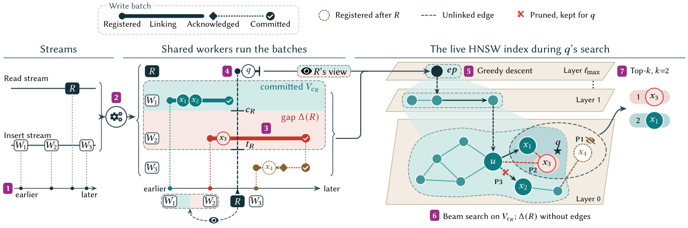

ANNchor: Concurrency Control for Freshness in Streaming Graph-Based Approximate Nearest Neighbor Search
SIGMOD 2027 · Round 3 Revision (Decision Dec 12)Makes every acknowledged insert immediately visible to queries on one live HNSW graph, through concurrency control rather than extra tiers or replicas.